Reduce cognitive load
Simplify the structure so people don’t have to work to understand the site.
In the design
Clear page sections, simple cards, short labels, step-by-step enrollment.
Case Study 02 · DWDD 2410 · Spring 2026
Club Ability teaches technology to kids, young adults and adult learners. Its website is the first stop for parents, students, donors and volunteers, and it was getting in their way. Over one semester our team worked out why, rebuilt the structure, and tested a prototype with real people.


How the semester went
Client and stakeholder interviews, early sketches, a list of assumptions, a scope draft and How Might We questions.
A survey, four discovery interviews, a heuristic review of the old site, and an eye-tracking study with three participants.
Personas, scenario maps and a sitemap to decide what belongs where.
Wireframes and revisions, surface comps, then a high-fidelity prototype.
Task-based prototype tests, with seven or eight people on each task.
We started by looking at the homepage the way a first-time parent would. Four problems kept coming up.
Problem statement
Users need a clear, easy-to-understand program website. Confusing navigation, unclear information and language barriers make it hard for parents, students and adult learners to find programs and take action.
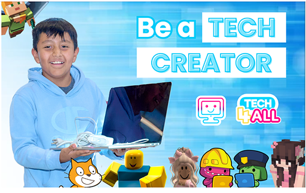
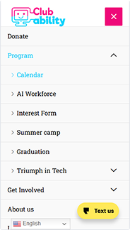
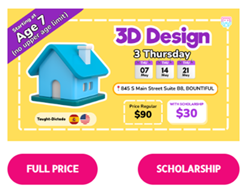
Too many options, no clear hierarchy and no strong primary action. Visitors had to stop and decide where to go before they could do anything.
Pricing, program structure and enrollment steps weren’t visible or prioritized, so people searched and guessed.
Buttons didn’t stand out, and several actions carried the same visual weight. It wasn’t obvious what to click next.
Content mixed both languages, and some text was baked into images. That is harder for bilingual visitors to follow, and it fails both the accessibility and real-world-match heuristics.
Five methods, each answering a different question: what the client wants, what people say they need, what they actually do, and where the old site breaks the rules.
The first thing we learned from the client is that one website has to serve parents, students aged 8 to 17, young adults, adult learners, donors and volunteers. They all arrive with different goals, so we couldn’t design for a single visitor.
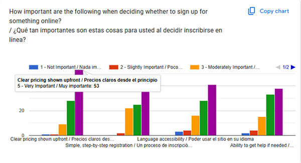
What people said they cared about
Checking the old site against the usual rules
We reviewed the original site against usability heuristics, including visibility of system status, consistency and standards, recognition rather than recall, and minimalist design. Strong areas were marked green and problems red.
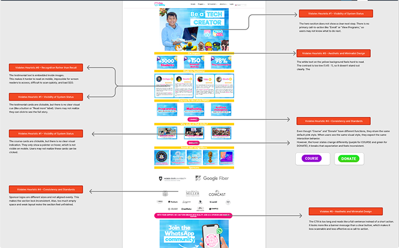
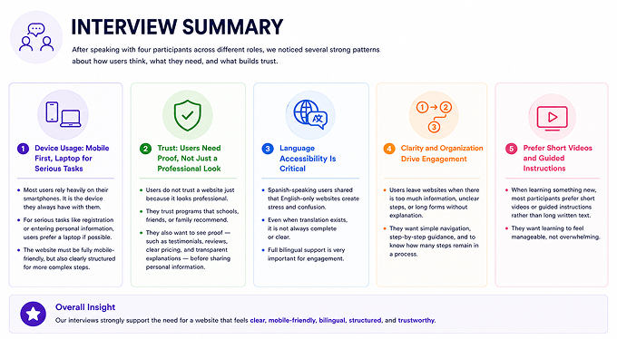
Four people, five patterns
We interviewed four participants in different roles to see what made them feel confident, confused or ready to act.
Where people looked, and why they hesitated
Three participants worked through task scenarios while we tracked their eyes and asked them to think aloud. They explored the homepage, said what they thought the organization does, looked for program information, tried to sign up for a course, and hunted for reviews or other trust signals.
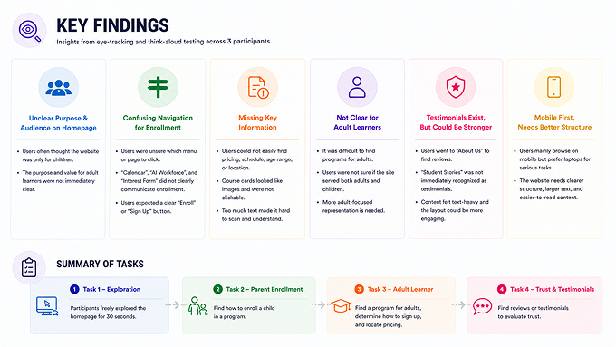
What the research added up to
So the redesign had to lean on clear navigation, a strong visual hierarchy and next steps that are always visible.
Each one became a rule we could hold the design to.
Important information should sit in clear headings, cards, labels and buttons, not long paragraphs.
So we did
Short sections, clear titles, visual hierarchy.
When navigation or program options feel overwhelming, people hesitate or click at random.
So we did
Group programs by audience or age, and cut unnecessary navigation choices.
Parents and donors need proof that the organization is credible before they act.
So we did
Testimonials, mission content, impact numbers and clear support pages.
People need to know exactly what happens after they choose a course.
So we did
A clear enrollment flow with the program already selected and as few form fields as possible.
Language barriers keep people from understanding programs and acting on them.
So we did
Simple wording, with English and Spanish content supported clearly.
Four principles from class that gave us a reason for each layout choice.
Simplify the structure so people don’t have to work to understand the site.
In the design
Clear page sections, simple cards, short labels, step-by-step enrollment.
The more choices people have, the longer they take to decide.
In the design
Fewer navigation options, age-based program categories, one primary action per section.
People notice what stands out visually.
In the design
Strong CTA buttons, highlighted pricing and schedule, clear headings and labels.
People shouldn’t have to remember where information is hidden.
In the design
Visible program categories, clear course cards, repeated CTAs where they help.
Personas and a sitemap set the structure. Wireframes, surface comps and a high-fidelity prototype came after.
Two people to keep in mind
Maria is a parent and adult learner with low tech confidence and not much time. She needs plain language and a reason to trust the site. Carlos is a young adult who scans quickly, compares programs, and expects schedule, price and enrollment details right away.
Two personas can’t stand in for everyone. Students, donors and volunteers still needed a way in. But Maria and Carlos kept us from designing for one imaginary visitor.
See the full personas in Figma →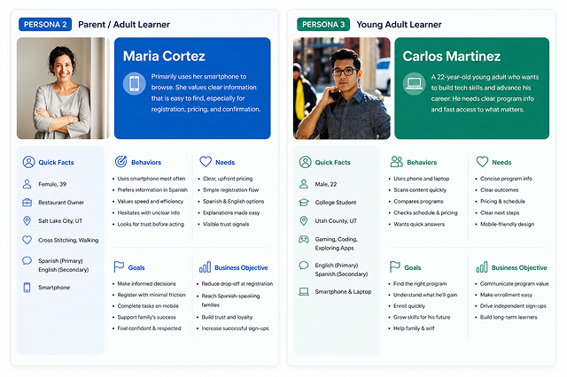
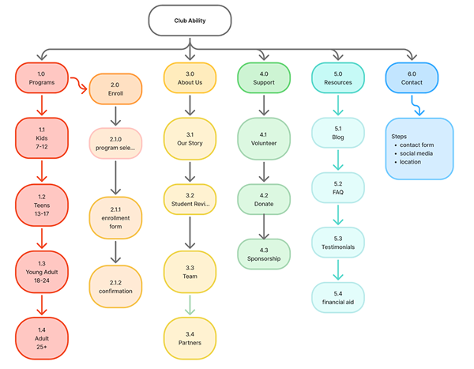
One path from program to enrollment
Programs · Enroll · About Us · Support · Resources · Contact
The sitemap has six branches, and Programs is split by age group. Enrollment is its own short flow of program selection, enrollment form and confirmation. People enter it from a program card rather than from the main navigation, because they should enroll after they’ve chosen a program, not before.
Seven pages in grayscale
We started with low-fidelity wireframes for Home, Programs, Sign Up, About Us, Support Us, Resources and Contact Us, each in desktop and mobile. Working in grayscale let us settle structure, content blocks and where each call to action sits before thinking about color.
Open the wireframes in Figma →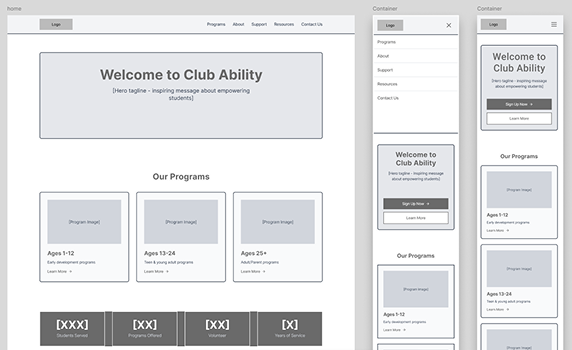
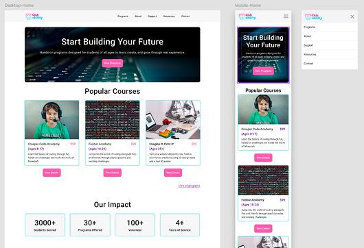
The same pages, with a visual identity
Surface comps applied color, type, imagery and reusable components to the wireframes, again for desktop and mobile. The mobile versions also show the open navigation menu. We designed the course registration pages and the volunteer, sponsorship and donation forms too.
Open the surface comps in Figma →Where the principles show up in the final screens
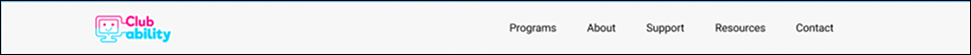
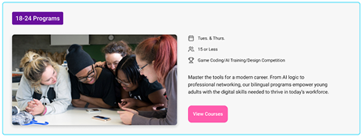
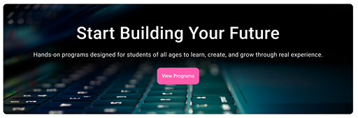
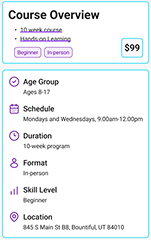
Participants worked through three scenarios in the prototype, with seven or eight people on each. That’s a small group, so we read the numbers as direction rather than proof.
Worked well
“Pretend you are a parent looking for a Minecraft course for your kid, so you can learn more about it.”
Needs work
“Navigate to where you can find out more information about Club Ability and what they are about.”
Mostly worked
“Pretend you are an adult looking for a course on how to 3D print.”
Results from our Maze usability report. Open the full report →
Finding a kids’ course was the easiest task. Everyone who tried it got there and nobody gave up. The older-audience task mostly worked too, though its misclick rate was high at 46.7%, which tells me the age categories could be easier to tell apart.
The About and donate path is where people got lost. Fewer than half found it, more than half dropped off, and the misclick rate was 63.9%. Our research said trust and clear information about the organization mattered most to parents and donors, so this is the gap I’d close first.
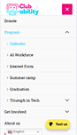
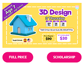
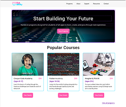
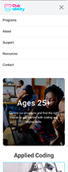
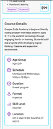
Finding a program worked well in testing. Finding out about Club Ability itself didn’t. Both results shaped what I took away from the project.
Users bring emotions into the experience. Confusing design creates stress, especially for people who already feel unsure about technology or language.
Rework how people reach the About and donation pages, then run that same task again with more participants to see whether the 42.9% success rate moves.
Low-fidelity layouts for seven pages, desktop and mobile.
Open in Figma → (wireframes)Visual design for each page, plus registration pages and forms.
Open in Figma → (surface comps)The full persona cards for Maria and Carlos.
Open in Figma → (personas)Task results from the prototype test.
Open in Maze → (usability report)